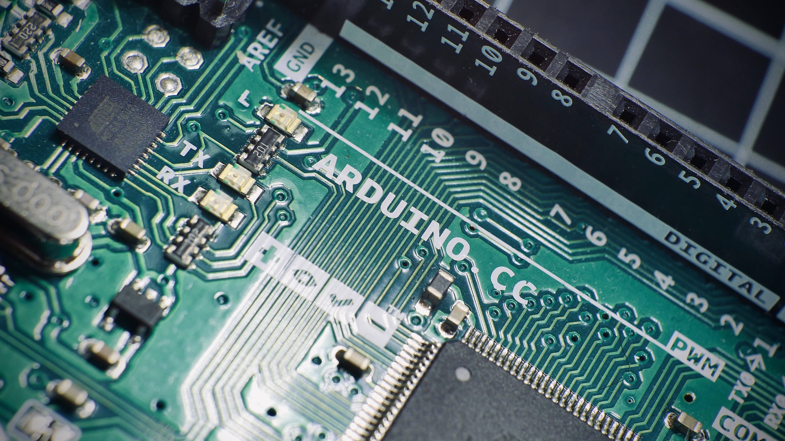

Myself Amey Nandrekar FY Btech, Iam persuing Mechanical Engineering Studies.
In my academic first year I learnt C and Python languages. I found them phenomenally interesting.
So, I also wanted to learn HTML and CSS(frontend development) while in lock down period.
Thanks SOAL for helping me to find a good HTML-CSS course.

I have learnt all types of loops,
I have learnt many inbuilt functions their syntax etc.
interested in programming
Electronic components using programming languages like Embeded C,
ated two Arduino projects
in my 1st Academic Year and have experience in working with Embeded
topics, and also application based topics such as file handling,
have created two projects on GUI based applications in my Academic
raming and I am learning different types of python libraries &

My projects using Embeded C :
1) Gas leak fixer using Arduino.
In this project I built a system which switches off the LPG regulator's knob when LPG was leaked and
1) Machine Learning using Arduino.
In this Arduino based machine learning model I built system that can predict the number of days LPG
cylinder would last long depending on the user's daily gas uses.

My project using Python Language :
1) Windmill Turbine's performance report Generator
I created a project that is able to create a performance report file of Windmill's WindTurbine. In this
project I had an experience of working with Tkinter, xlwt, xlrd, MatpoltLib libraries.
2) Transaction module for market
This is a desktop GUI based simulation, in this project I worked only on GUI part and also gained some
knowledge of different ways of money transactions.